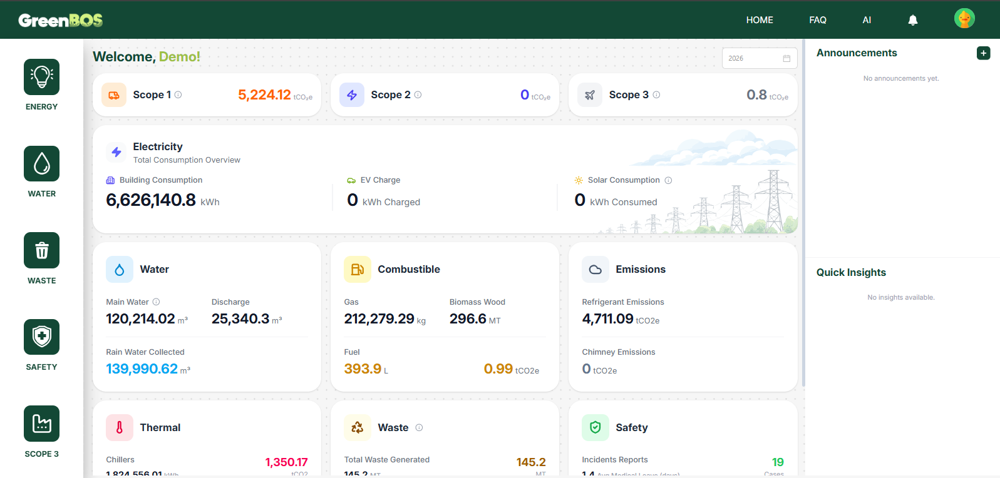
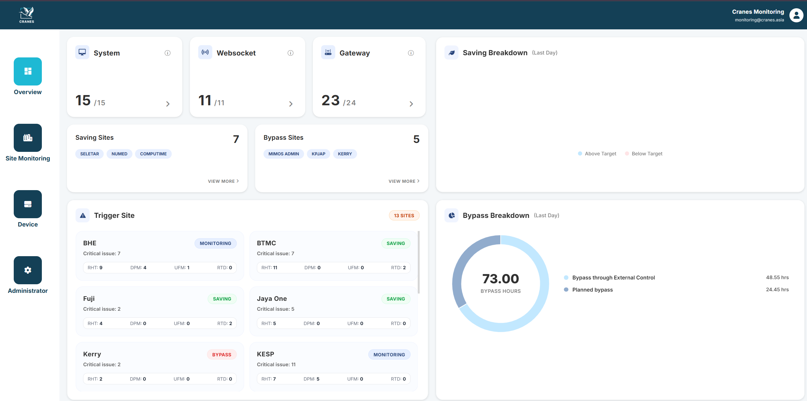
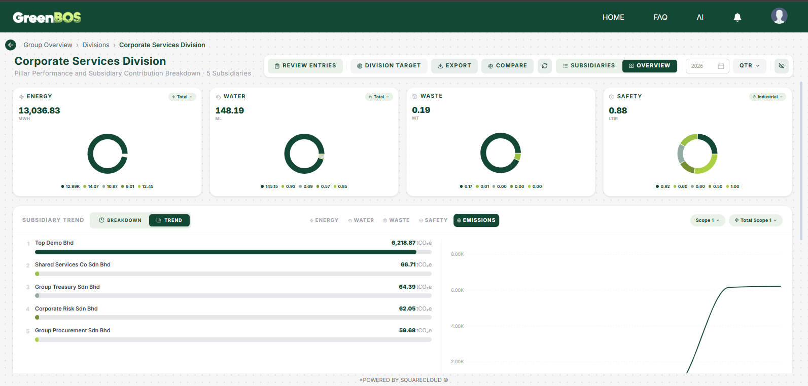
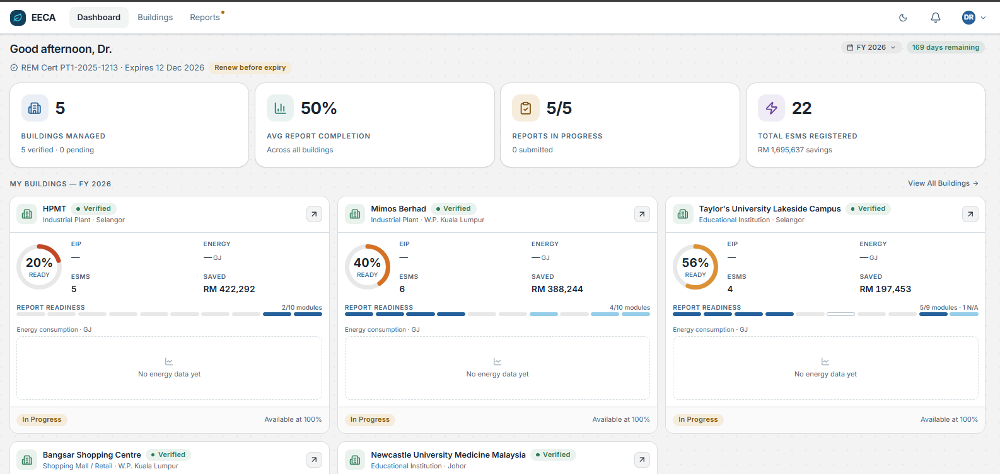

GreenBOS Platform
Led end-to-end software development of an energy and sustainability platform, including core feature delivery and client onboarding within a two-month period.
Product architectureDashboardsTeam
leadership
Hello, I'm Hairi.
Leading software development through technical strategy, team management, and intelligent engineering. I empower developers, drive innovation, and transform ambitious ideas into scalable, reliable products.
I’m a software engineer and team lead focused on building useful, scalable technology—from enterprise applications to connected energy systems.
At SquareCloud Malaysia, I lead software initiatives across product architecture, UI/UX, databases, networking, security, deployments and team development. I care about the full picture: strong engineering decisions, intuitive experiences and real-world outcomes.
My background in Business Computing brings together technical execution and an understanding of how technology creates value for people and organizations.
Explore my journey ↗Selected professional initiatives. Details reflect my roles and responsibilities; product visuals are illustrative.

Led end-to-end software development of an energy and sustainability platform, including core feature delivery and client onboarding within a two-month period.

Led development teams working on an IoT monitoring system for energy and control applications, connecting device signals with useful operational insights.

Leading work on an ESG reporting portal incorporating AI-assisted reporting, supply-chain management and data pipelines. Ongoing

Leading an EECA-related software initiative involving AI-assisted reporting and selection of suitable IPMVP approaches for energy-saving projects.
My journey from full-stack delivery to leading multidisciplinary software teams.
Lead software architecture, development, delivery and cross-functional coordination for connected platforms. Mentor developers, support team growth and guide product onboarding.
Built enterprise web applications, independently developed an internal library system and supported server/network configuration for production releases.
A cross-functional toolkit spanning software engineering, connectivity, and technical leadership.
JavaScript · Node.js · React · PHP · Python · C++ · SQL · HTML · CSS
MQTT · Modbus · SCADA · Device monitoring · Troubleshooting · VPN / WLAN
Application architecture · Databases · Networking · UI/UX · Security design · Deployment
Team mentorship · Hiring · Project coordination · Stakeholder presentations · User onboarding
I'm always interested in meaningful technology, thoughtful engineering and conversations about what's next.
Get in touch ↗